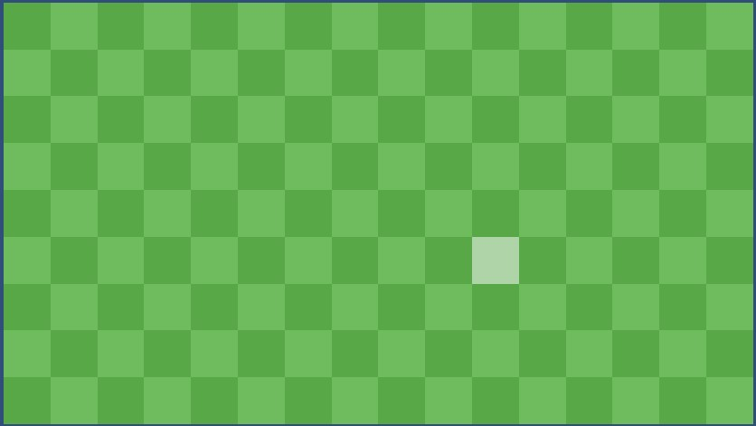
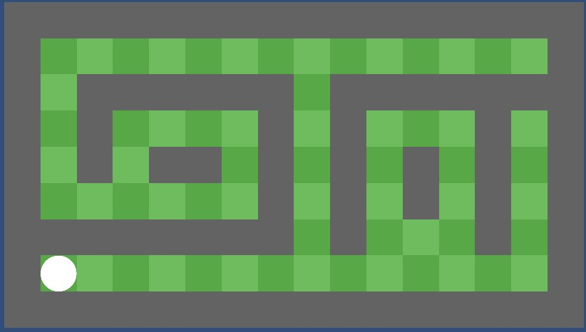
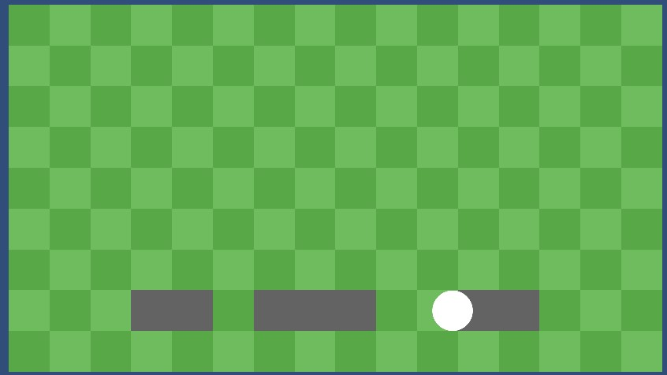
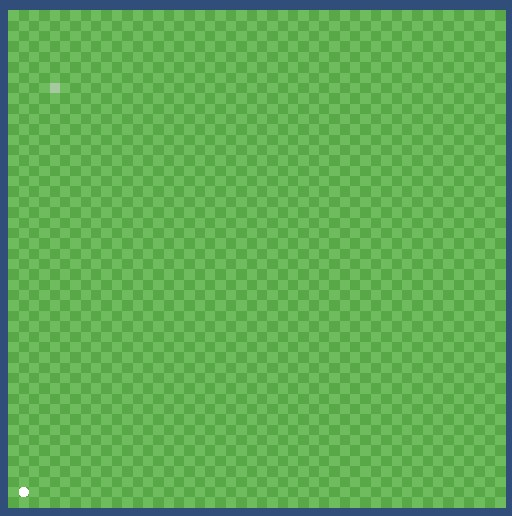
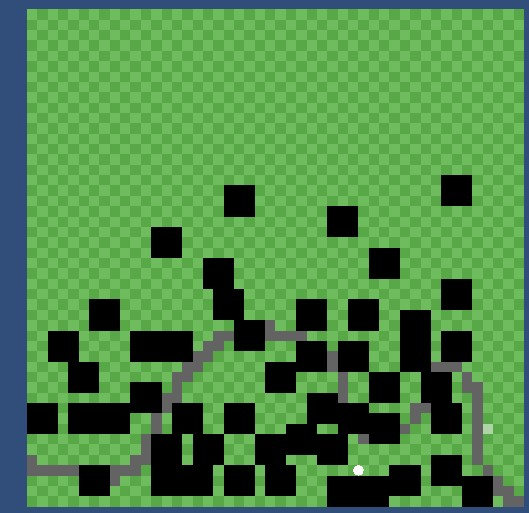
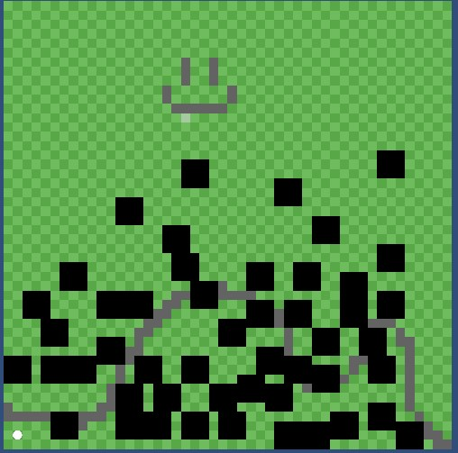

The beginning of it all

As I said in my Final year project page I wanted to see if I could take GOAP further and use it to make an adventurer board for dnd. This requiring using GOAP AI to simulate the villagers and have them go around running a dungeons and dragons town to make a more immersive experience for a campaign which revolves around an adventurers guild in one area.
In this vein this is why I have started this project. The main skills I want to take away from this are 3 fold: firstly gain experience transferring and converting Unity code from a 3d world to a 2d world; secondly learn how to safetly implement AI to increase performance while learning; finally make a product which feels human to use and with a little effort usable for any dm who can make there town in the simulator.
So as any good project needs I needed a starting point which for me was first making the grid itself. This seemed the most logical for me as no point placing anything into a world if it has nothing to stand on. To this end I Followed the youtube guide: Create a grid in Unity - Perfect for tactics or turn-based games! by Tarodev to accomplish this.
Adding in roads and an AI
My goal today was simple. Add in a AI which I can add movement to later and some walls to the tileMap
To make the walls I created an Enum which will store all the types which a tile could be currently. This has been done to make the pathing algorithm later easier to implement. To then create the different rendering style I added a hidden object to the tile in which gets activated when you left click on a tile turning it into a road. This has allowed quick road placement alongside the drag feature while left click was held down.
The ai was just made for rendering today and added to the -1 z layer so it is spawned at the top of the current map. This will be a simple circle for the minute however might change in the future.

Adding functionality to AI and Roads

The next goal which needed to be overcome was having the ai moved to specified locations. This is so when passing positions into tasks they are able to reach the destinations they are required to. This was a fairly easy task to accomplish and was just done with a MoveTowards command in the update function of the baseAI. To allow for spefic ai to move a highlighted functionality was added to the ai as well.
In the same vein. To get the ai to move faster when on roads we pass the gridManager through to the ai which then allows it to check if the current tile it is on is a road (And if so to move 2 the speed along it). This functionality will be later used also for stopping and pathing the ai around buildings.
Refactoring Grid manager and adding in camera functionality
As I am plannign to implement HPA-A* pathing I needed to do a small refactoring of the grid manager to allow this. In this case the main difference was I needed to split the grid into chunks of equal sizes to use in this algorithm later
This then came with another problem - the grid was now to big to see the starting character to check functionality. In this vein I added in camera zoom and movement functionality so now the camera can be moved around the scene.

Pathfinding

So now the largest hurdle before getting to goap and town simulation. Pathfinding. As this would not be the focus of the project I decided it would be the perfect time to use AI to speed up the process. For this like I said previously I wanted to implement HPA-A* - Hierarchal pathfinding A* - as I need the pathing to be highly optimised. This is due to the fact I will be hoping to simulate at least 500 AI doing actions at once in the final product which most of there time will be taken up in this pathing algorithm
So lets starts with the benefits: Firstly the program can instantly know if there is no valid path. Unlike a* which will search the entire grid before coming to this conclusion hpa uses the region edges to be able to tell whether an area is even accessible from your current location; Secondly it reduces the number of tiles that the a* algorithm has to search due to it only needing to scan the regions which are a part of the optimal path on the grid;Finally its just that much faster. On smaller maps it is slightly faster but as maps get larger it exponentially becomes more optimal to use this instead of regular A*.
Nows the downsides. Like anything in programming there is always a downside to 1 algorithm over another. The major downside to this is that we need to calculate the gates and vertexs between each region of the map once we are happy with building placement - which in my case doesn't matter as once the world has been built the walkable terrain will be static anyway. The second downside is it can also only be used properly for a grided map going horizontal and vertical. This will have a slight impact on the ai's speed but one I'm willing to take for program run time and reducing bugs in the future.
Anyway to do implementation after my rework in the previous section it was relatively easy to get implemented only taking about 3 hours to get implemented with claude. The main time sync here being keeping coding standards clean and readable - claude loves to use var which is terrible for debugging later. and some bug fixing at the other end. Once that had been sorted though got it all working in game and it looked great even with multiple AI around the screen.
Save system
The save system wasn't to bad to implement. All we needed to do was save out non default tiles which came down to just the following requirements: was a building in this location, was that building the origin point of its structure and is it a road
After saving out these details it worked pretty much harm free. In the future we will need to save out more data like stuff for the AI and information about whats stored in buildings but for now while pathing is my greatest concern this system will work
